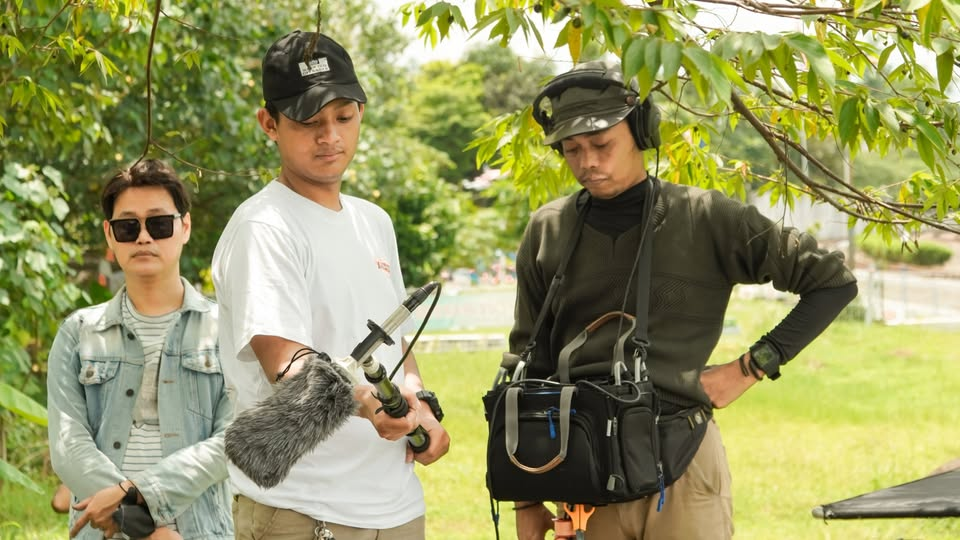

Visualizing Stories into Meaningful Short Films.

Layanan Filmmaker ini berfokus pada pembuatan film pendek yang mengutamakan kekuatan cerita, konsep visual, dan kedalaman emosi. Saya memiliki pengalaman dalam menciptakan dan mengembangkan film pendek secara langsung, mulai dari tahap ide, penulisan konsep, penyusunan naskah, hingga proses produksi yang terarah. Setiap karya dirancang dengan pendekatan sinematik yang tidak hanya memperhatikan estetika visual, tetapi juga makna dan pesan di dalam cerita. Proses pengerjaan dilakukan secara terstruktur dan profesional agar hasil akhir memiliki identitas yang kuat, relevan, dan berkesan bagi audiens. Layanan ini cocok untuk proyek film pendek, konten naratif, portofolio kreatif, maupun karya visual berbasis konsep yang membutuhkan storytelling yang serius dan tidak sekadar visual biasa.
Konsep cerita yang terstruktur, Visual yang sinematik dan modern, Eksekusi yang terarah dan profesional, Fokus pada kualitas, bukan sekadar kuantitas.
Berpengalaman, Fokus Pada storytelling, Gaya Visual Yang Sinematik.
Proyek film pendek independen, Konten sinematik untuk portofolio, Proyek festival film, Video naratif berbasis konsep.